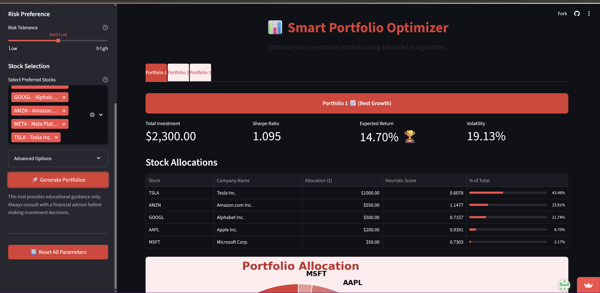
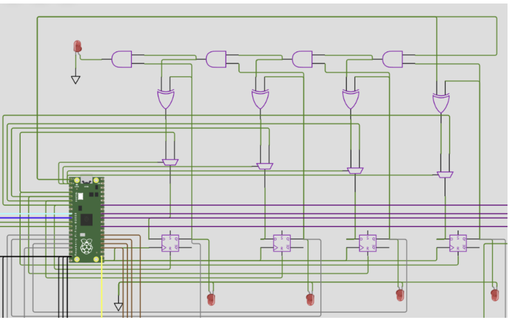

Tools Used: Python, CSP, A* Search, LSTM, Streamlit, yFinance, HuggingFace

This collaborative university project focused on smart financial planning by personalizing portfolio allocations based on user data and stock forecasting. We used CSP to model user constraints, A* to search optimal investments, and LSTM models to forecast returns.
Tools Used: VeeR-ISS, RiscV GNU Toolchain, Verilator
In this course-based group project, we developed a vectorized Sudoku solver for large grids using the RISC-V architecture. The performance was enhanced via parallel processing and simulated through VeeR-ISS and Verilator.
Tools Used: Power BI, Python, DAX, Design Thinking

This Business Intelligence group project tackled real-world retail challenges like high return rates, inconsistent regional sales, and inefficient shipping. We analyzed over 49K transactions (2020–2025) and designed a suite of dashboards that track KPIs, compare discount performance, and visualize country-level shipping costs.
Our solution empowered decision-makers with interactive insights across categories, channels, and geographies — helping reduce revenue leakage and optimize operations.
Tools Used: WokWi, Raspberry Pi, Python

For our digital systems course, we implemented a SAP-1 simulation — a simplified 4-bit processor that demonstrates instruction cycles and memory usage. Developed using WokWi and Raspberry Pi, it served as an educational tool to model basic computer architecture.
{kind=link}